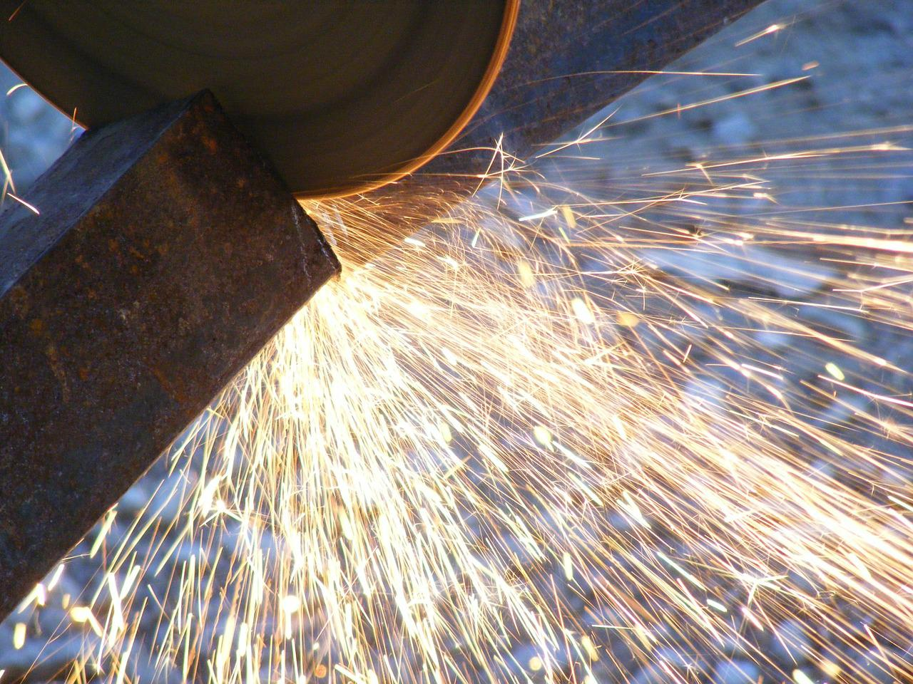
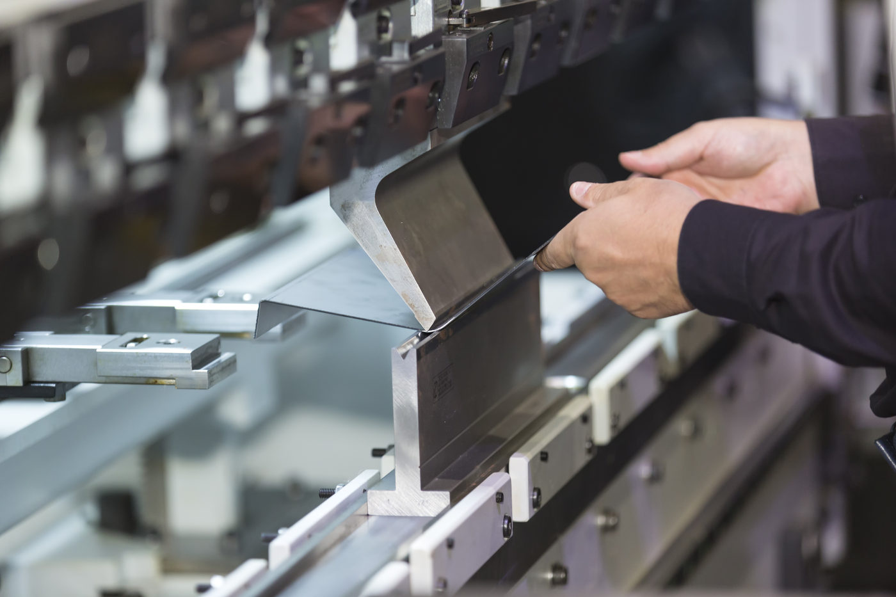
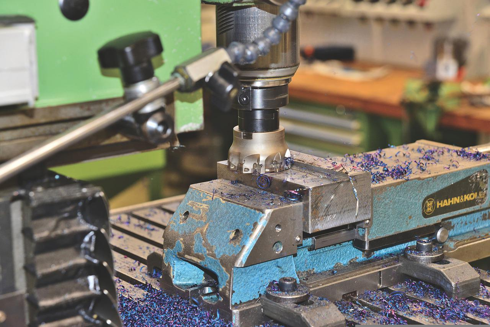
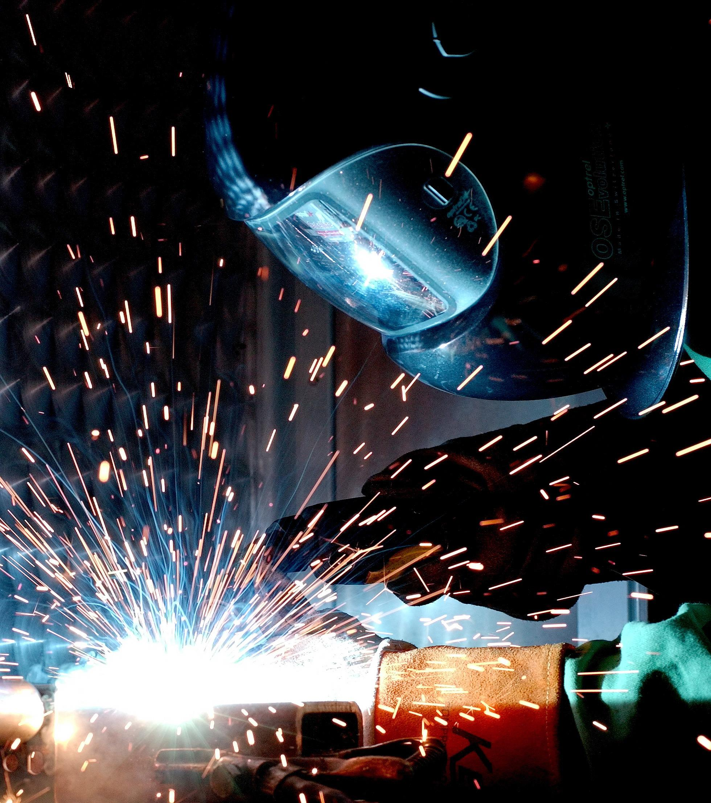
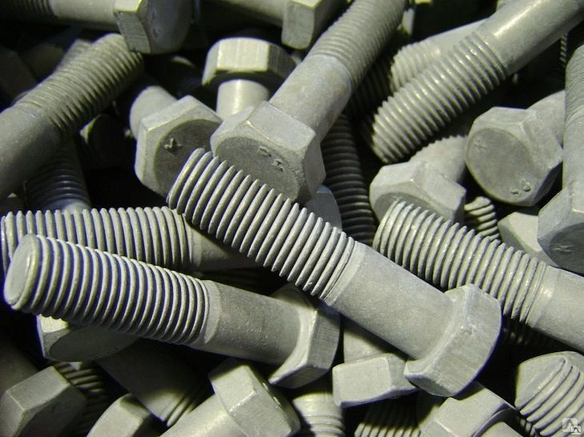

ТОКАРНЫЕ РАБОТЫ
Токарные работы - обработки резанием (точением) заготовок из металлов. На токарныхстанках
выполняют
обточку
и расточку цилиндрических, конических и фасонных поверхностей, нарезание резьбы.

СВЕРЛЕНИЕ
Сверление - изготовление цилиндрических отверстий помощью режущих инструментов, называемых сверлами.

РЕЗКА МЕТАЛЛА
Резка - раскрой металла по размерам или чертежам.

ГИБКА МЕТАЛЛА
Гибка - сгибание металла на гибочном оборудовании по заданным углам.

ФРЕЗЕРНЫЕ РАБОТЫ
Фрезерные работы - это резание металла с помощью фрезы, которая совершает вращательное движение. Заготовка
при этом совершает поступательное движение. Производится на специальном станке - фрезерном.

ТЕРМООБРАБОТКА
Термообработка - для придания металлическим изделиям требуемых физико-механических свойств без изменения
химического состава металлов.

СВАРКА (ДУГОВАЯ, СВАРКА В СРЕДЕ АРГОНА И СО, КОНТАКТНАЯ)
Сварка - соединения элементов с расплавлением кромок посредством теплоты электрической дуги, в среде аргона,
СО (углекислого газа) или придуговой сварке в газе образующемся из обмазки электрода.

АНТИКОРРОЗИЙНОЕ ПОКРЫТИЯ: ЦИНОЛ
ЦИНОЛ - применяется для антикоррозионной защиты стальных изделий и сооружений, эксплуатируемых в атмосферных
условиях всех макроклиматических районов, типов атмосферы и категорий размещения по ГОСТ 15150-69.

АНТИКОРРОЗИЙНОЕ ПОКРЫТИЯ: ЦИНОТАН
ЦИНОТАН - предназначенный для антикоррозионной защиты стальных, бетонных и оцинкованных поверхностей.
Содержит высокодисперсный порошок цинка, уретановое связующее, органические растворители и добавки
вспомогательных веществ.

ГАЛЬВАНИЧЕСКОЕ ЦИНКОВАНИЕ
Гальваническое цинкование - это металлическая пленка толщиной от долей микрона до десятых долей миллиметра,
наносимые на поверхность не металлических и металлических изделий методом гальваники для придания им
твердости, износостойкости, антикоррозийных, антифрикционных, декоративных свойств.

ТЕРМОДИФФУЗИОННОЕ ЦИНКОВАНИЕ
Термодиффузионное цинкование - обеспечивает наилучшее качество покрытия изделий из стали и чугуна, что во
много раз продлевая срок их эксплуатации, изделие покрывается цинком из паров при высокой температуре в
защитной атмосфере водорода.

Также изготавливаем различные детали из металла по чертежам, эскизам и по образцу заказчика. Отправляем продукцию в регионы, доставляем до транспортной компании.